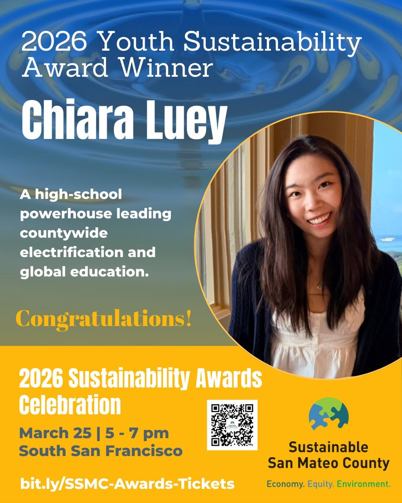

Cornell Environmental Engineering ’30
ChiaraLuey
I research clean energy, campaign for it and teach it. Right now I’m on the Cognition AI deal team at Cornell Venture Capital.
Selected wins 10
- 0191%Published CO₂-to-ethanol catalyst research, with mentors from MIT, Stanford and Washington State.Research
- 02Cognition AIOn the deal team at Cornell Venture Capital, sourcing and diligence alongside the club’s VCs.Venture
- 034 districtsCo-led Electric-First campaigns at WestLight Energy: 9,000+ students, about 2M kg of CO₂ a year.Policy
- 05Judges’ ChoiceCornell Local AI Hackathon, for Adam, an offline handwriting econ tutor.Code
- 06StanfordResearch intern in the Waymouth and Rotskoff chemistry labs.Lab
- 07Bangkok → MITPresented research at ICAE with the UN, MIT THINK, JSHS and the California Science Fair.Stages
- 08500+ kidsFounded Energizing Youth, clean-energy lessons with branches in Zambia and Brazil.Founder
- 09Chiara MaliaStarted my own jewelry brand. 19-piece debut collection.Founder
- 10Top 100US Squash, and a 3× U.S. Squash Scholar-Athlete.Athlete
Written about me All press →
 Globe Anew · PodcastStarting a Climate Movement Before College
Globe Anew · PodcastStarting a Climate Movement Before College
Sustainable San Mateo County2026 Youth Sustainability Award Winner San Mateo Daily JournalClass Notes: Chiara Luey named award winner
San Mateo Daily JournalClass Notes: Chiara Luey named award winner Awesome Math GirlsInterview Series: Chiara Luey
Awesome Math GirlsInterview Series: Chiara Luey Silicon Valley Youth Climate ActionFrom Classrooms to County: the Peninsula’s first electrification outreach team
Silicon Valley Youth Climate ActionFrom Classrooms to County: the Peninsula’s first electrification outreach team energizingyouth.orgHow Energizing Youth started
energizingyouth.orgHow Energizing Youth startedWorked with